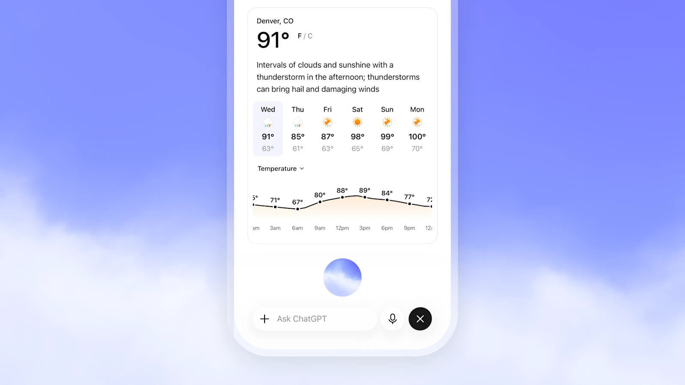
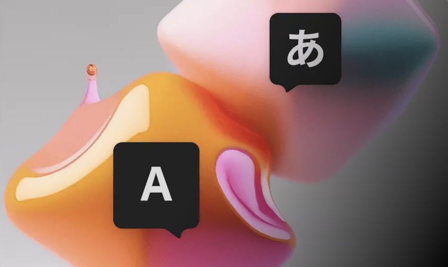
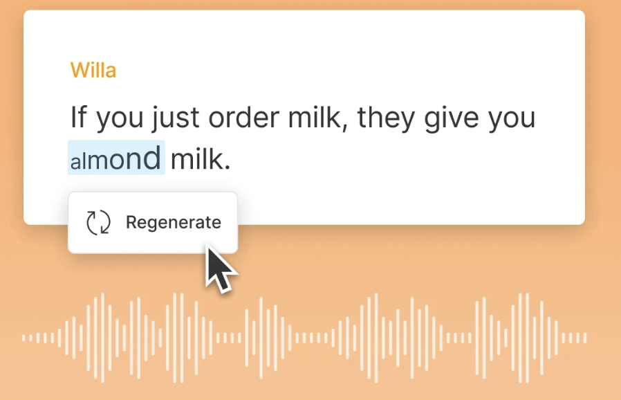
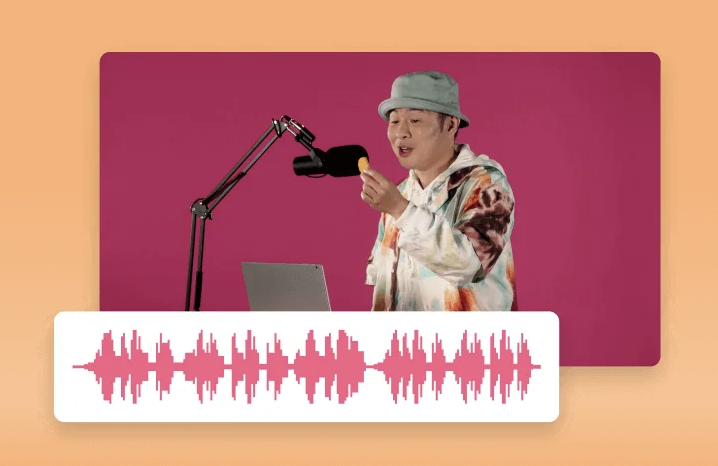

OpenAI
OpenAI
Member of Technical Staff, building the next generation of voice interfaces to AGI.
Member of Technical Staff
OpenAI
San Francisco, CA 🇺🇸
I work on building audio interfaces to AGI at OpenAI. We are entering an era of increasingly intelligent, agentic models that can gather context at enormous scale asynchronously, while still needing to listen, perceive, and respond in real-time and present information in a human-like way. We just shipped GPT Live 1 to realize this vision.
Before OpenAI, I was a Senior Research Scientist at Adobe Research, where I led speech generation efforts across controllable text-to-speech, automatic dubbing, and speech editing. My work centered on scaling diffusion models and developing efficient distillation algorithms for multilingual audio generation.
Before Adobe, I was Technical Lead for Audio Research at Descript Inc., where I built and shipped 4+ text-to-speech models powering the flagship Overdub and Regenerate features—enabling ultra-realistic voice cloning and text-based audio corrections.
My work has been rooted in the fundamentals of generative modeling and deep learning since 2016. I had the privilege of completing my M.Sc. in Computer Science (2017–2019) at the Mila lab in Université de Montréal under the supervision of Prof. Yoshua Bengio.
Member of Technical Staff, building the next generation of voice interfaces to AGI.
Research on controllable text-to-speech synthesis, automatic dubbing, and speech editing.
Technical Lead for Audio Research. Overdub, Regenerate, and AI Voices.

A new generation of voice models for natural human-AI interaction, now powering ChatGPT Voice.

Speaker-preserving voice translation for multilingual media workflows, plus voice generation for animated avatars.

Speech editing and audio repair that turns awkward cuts, gaps, and retakes into smooth generated speech.

Voice cloning and text-to-speech systems behind Overdub and later AI voice creation workflows.
Prem Seetharaman*, Rithesh Kumar*.
William Chen, Prem Seetharaman, Rithesh Kumar, Oriol Nieto, Shinji Watanabe, Justin Salamon, Zeyu Jin.
Justin Lovelace, Rithesh Kumar, Jiaqi Su, Ke Chen, Kilian Q. Weinberger, Zeyu Jin.
Yingahao Aaron Li, Rithesh Kumar, Zeyu Jin.
Rithesh Kumar, Prem Seetharaman, Alejandro Luebs, Ishaan Kumar, Kundan Kumar.
Hugo Flores Garcia, Prem Seetharaman, Rithesh Kumar, Bryan Pardo.
Kundan Kumar, Rithesh Kumar, Thibault de Boissiere, Lucas Gestin, Wei Zhen Teoh, Jose Sotelo, Alexandre de Brebisson, Yoshua Bengio, Aaron Courville.
Rithesh Kumar, Sherjil Ozair, Anirudh Goyal, Aaron Courville, Yoshua Bengio.
Soroush Mehri, Kundan Kumar, Ishaan Gulrajani, Rithesh Kumar, Shubham Jain, Jose Sotelo, Aaron Courville, Yoshua Bengio.
Sonal Kumar, Prem Seetharaman, Ke Chen, Oriol Nieto, Jiaqi Su, Zhepei Wang, Rithesh Kumar, Dinesh Manocha, Nicholas J. Bryan, Zeyu Jin, Justin Salamon.
Yutong Wen, Ke Chen, Prem Seetharaman, Oriol Nieto, Jiaqi Su, Rithesh Kumar, Minje Kim, Paris Smaragdis, Zeyu Jin, Justin Salamon.
Yunyun Wang, Jiaqi Su, Adam Finkelstein, Rithesh Kumar, Ke Chen, Zeyu Jin.
Heitor R. Guimaraes, Jiaqi Su, Rithesh Kumar, Tiago H. Falk, Zeyu Jin.
Stephen Brade, Sam Anderson, Rithesh Kumar, Zeyu Jin, Anh Truong.
Max Morrison, Rithesh Kumar, Kundan Kumar, Prem Seetharaman, Aaron Courville, Yoshua Bengio.
Rithesh Kumar, Kundan Kumar, Vicki Anand, Yoshua Bengio, Aaron Courville.
Kyle Kastner, Rithesh Kumar, Tim Cooijmans, Aaron Courville.
Rithesh Kumar, Anirudh Goyal, Aaron Courville, Yoshua Bengio.
Rithesh Kumar, Jose Sotelo, Kundan Kumar, Alexandre de Brebisson, Yoshua Bengio.